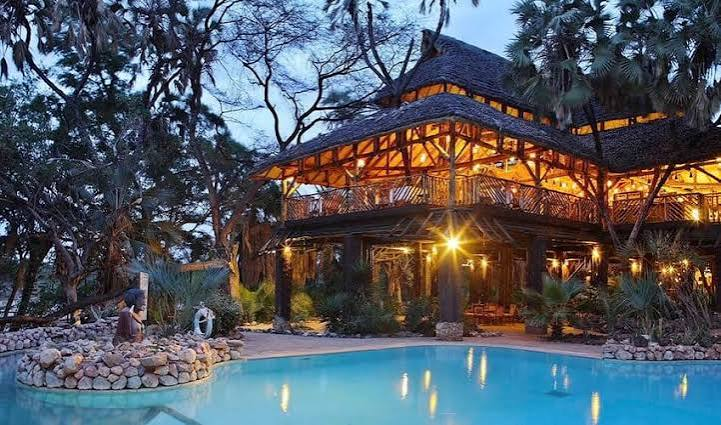
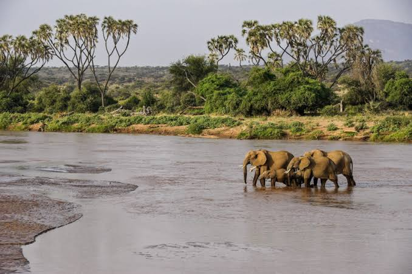

7-Day Safari Itinerary
Discover Kenya's spectacular wildlife destinations on this unforgettable seven-day safari through Shaba Game Reserve, Lake Nakuru and the legendary Masai Mara.

Arrival in Nairobi
Upon arrival at Jomo Kenyatta International Airport, you'll be warmly welcomed by our representative and transferred to Ole Sereni Hotel. Spend the remainder of the day relaxing after your journey before your safari adventure begins.
- Airport meet & greet
- Transfer to Ole Sereni Hotel
- Relax and unwind
- Safari briefing

Nairobi → Shaba Game Reserve
After breakfast, depart Nairobi for the spectacular Shaba Game Reserve in northern Kenya. Arrive in time for lunch before enjoying an afternoon game drive through this unique wilderness known for its rare wildlife and stunning scenery.
- Morning drive to Shaba
- Check in at Sarova Shaba Game Lodge
- Afternoon game drive
- Dinner & overnight

Full Day in Shaba Game Reserve
Enjoy a full day exploring Shaba Game Reserve with morning and afternoon game drives. Search for elephants, lions, leopards, Grevy's zebras, reticulated giraffes, Beisa oryx and other unique northern Kenya wildlife.
- Morning game drive
- Afternoon wildlife safari
- Excellent bird watching
- Overnight at Sarova Shaba Game Lodge

Shaba Game Reserve → Lake Nakuru
After breakfast, journey south to Lake Nakuru National Park. Arrive in time for lunch before an afternoon game drive in this renowned sanctuary famous for its rhinos, flamingos and diverse wildlife.
- Scenic drive to Lake Nakuru
- Afternoon game drive
- Rhino sanctuary visit
- Overnight at Sarova Lion Hill Lodge

Lake Nakuru → Masai Mara National Reserve
Travel through the scenic Great Rift Valley to the world-famous Masai Mara National Reserve. Arrive in time for lunch before heading out on an exciting afternoon game drive.
- Drive to Masai Mara
- Afternoon game drive
- Big Five wildlife viewing
- Overnight at Sarova Mara Game Camp

Full Day in Masai Mara
Spend the entire day exploring Kenya's most famous wildlife reserve with extensive game drives in search of the Big Five and many other incredible animals across the endless savannah.
- Morning game drive
- Picnic lunch in the reserve
- Afternoon wildlife viewing
- Overnight at Sarova Mara Game Camp
Masai Mara → Nairobi
Enjoy breakfast before departing the Masai Mara for Nairobi. Arrive in the afternoon and transfer to the airport or your preferred drop-off point, bringing your unforgettable Kenyan safari adventure to an end.
- Breakfast
- Scenic drive to Nairobi
- Airport / hotel drop-off
- End of safari